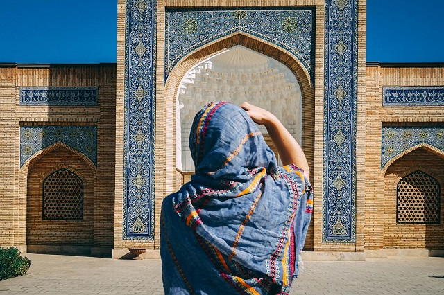

Uzbekistan is a fabulous and amazing country, a real monument of the history of many people and empires, one of the points of the ancient Silk Road. This Central Asian republic has the most diverse assets that attract visitors from all over the world- beautifuls desert and mountain landscapes, ancients cities and monuments of architecture, colorful culture.
Uzbekistan has lots of popular destinations to visit all over its 12 regions. Here is some of the most famous cities to visit: